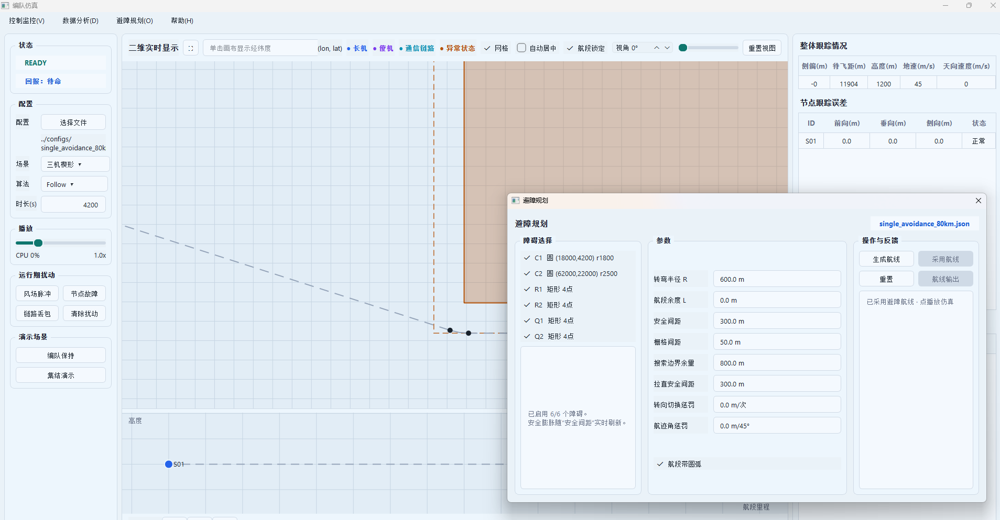
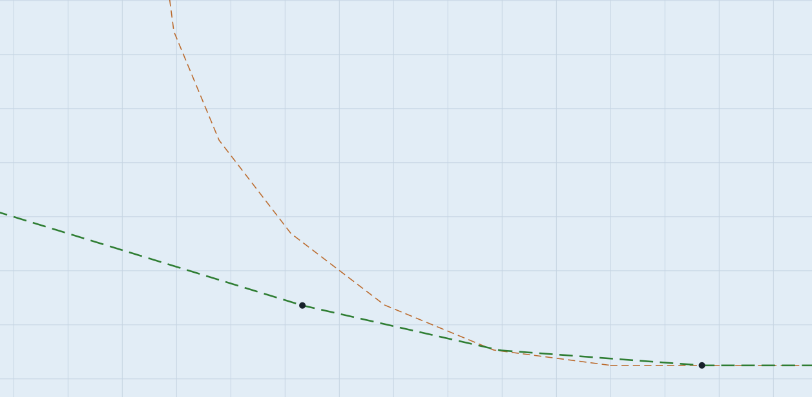

数据结构
@dataclass
class ObstacleS:
id: str
kind: str # "circle" | "rect" | "polygon"
center: PosInEarthS
radius: float
min_e: float
min_n: float
max_e: float
max_n: float
vertices: list[PosInEarthS]圆形障碍用圆心和半径；rect 用 east/north 方向上的最小最大边界；旋转矩形和任意多边形用顶点序列。polygon 在构造时同时缓存轴对齐包围盒，后续热点判障无需反复扫描顶点求边界。高度字段不参与避障，因为当前仍做二维水平避障。
膨胀判障
inside() 的语义是：点是否落在“障碍 + clearance”里面，边界算内。
if obstacle.kind == "circle":
radius = obstacle.radius + clearance
if abs(de) > radius or abs(dn) > radius:
return False
return de * de + dn * dn <= radius * radius
if obstacle.kind == "polygon":
if outside_cached_bbox(east, north, clearance):
return False
if point_inside_polygon(east, north):
return True
return any(distance_to_edge_sq(east, north, edge)
<= clearance * clearance for edge in edges)
return inside_expanded_rect(east, north, clearance)A* 实际绕开的不是黑色真实障碍，而是橙色虚线代表的膨胀障碍。轴对齐
rect 是方角外扩；polygon 使用“内部或到任一边的距离不超过 clearance”，因此凸角呈圆角，旋转矩形不会退化成轴对齐大包围盒。为什么要有 blocked()
def blocked(obstacles, east, north, clearance=0.0):
return any(inside(obstacle, east, north, clearance)
for obstacle in obstacles)A* 要判断格心是否可通行，视线去冗余要判断线段采样点，可飞性要判断直线与圆弧采样点。各阶段如果分别实现形状几何，很容易产生安全边界不一致，因此工程把最终点判定收敛到 inside()。
判障热路径优化
| 优化 | 减少的工作 | 不改变的语义 |
|---|---|---|
| polygon 构造时缓存 bounds | 不再为每次 obstacle_bounds() 扫描全部顶点。 | 精确判障仍使用原始顶点。 |
| 圆和 polygon 先做包围盒排除 | 远场点无需进入平方距离、射线法或逐边循环。 | 包围盒只负责提前返回 False。 |
| 比较距离平方 | 圆判定和点到边判定避免热点中的反复开方。 | d² ≤ clearance² 与距离比较等价。 |
| 线段再预筛候选障碍 | 密集采样点只检查与线段扩展包围盒相交的障碍。 | 被排除的障碍在几何上不可能命中该线段。 |
这些优化只做“便宜的否定”：能够证明不可能命中时才提前退出。候选预筛后的完整路径还会接受全量障碍复核，安全规则见第 05 章。
配置到对象
| 配置字段 | 对象字段 | 说明 |
|---|---|---|
type: circle | kind="circle" | 使用圆心和半径。 |
type: rect | kind="rect" | 使用 east/north 上下界。 |
type: polygon | kind="polygon" | 使用顶点序列，可表达旋转矩形和地形轮廓。 |
经纬度 points | 内部 polygon 顶点 | 使用基础航线 origin 转换为 ENU，保持旋转和轮廓形状。 |
enabled | UI 勾选状态 | 未启用的障碍不会传给规划。 |
clearance_m | clearance | 规划判障时统一传入。 |
显示边界必须与判障边界一致
早期显示层把 polygon 膨胀角画成 miter 尖角，而后端判障使用圆角距离边界，造成“航线穿过橙色安全框”的视觉假象。当前显示已经改成圆角外扩，与 inside() 一致。


弓高吃掉的是部分安全裕度，不等于触及真实障碍。若业务要求整条折线始终保持完整 clearance，需要加密路径或生成贴边曲线，而不是再次扩大显示轮廓。
本章检查题
- 为什么边界点也算障碍内？
- 如果
clearance_m调大，A* 搜索空间会变宽还是变窄？ - 为什么 polygon 同时保存原始顶点和轴对齐 bounds，而不能只保留 bounds？